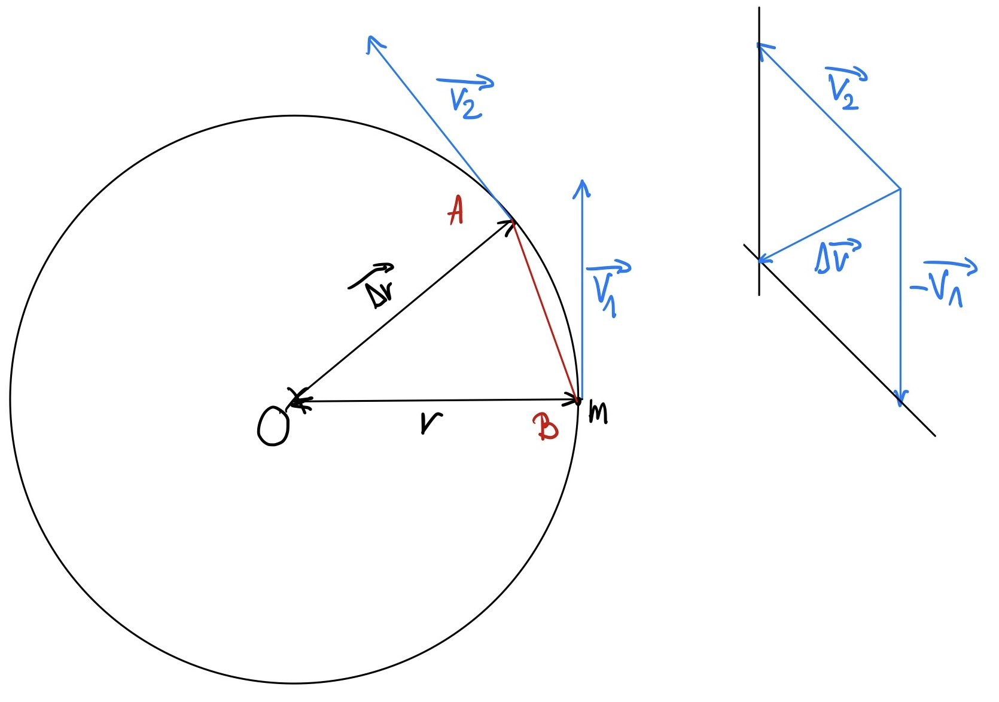

Kreisbewegungen
Winkelgeschwindigkeit, Drehfrequenz
Definition
Die Winkelgeschwindigkeit \( \omega \) ist der Quotient aus dem durchlaufenden Drehwinkel \( \Delta \varphi \) und dem dafür benötigten Zeitintervall \( \Delta t \).
$$ \omega = \frac{\Delta \varphi}{\Delta t} $$ $$ [\Delta \varphi] = rad $$ $$ [\omega] = \frac{rad}{s} $$Anmerkung
Durch die Definition des Bogenmaβes oder Radianten erhält man:
$$ \Delta \varphi = \frac{\Delta s }{r} $$Bahngeschwindigkeit
Herleitung
Die Bahngeschwindigkeit \( v \) entspricht dem Quotienten aus dem zurückgelegten Bogenstück \( \Delta s \) und dem dafür benötigten Zeitintervall \( \Delta t \).
$$ v=\frac{\Delta s}{\Delta t} =\frac{r\cdot \Delta \varphi }{\Delta t} =r\cdot \frac{\Delta \varphi }{\Delta t} =r\cdot \omega $$Definition
Die Bahngeschwindigkeit \( v \) ist das Produkt aus Bahnradius \( r \) und Winkelgeschwindigkeit \( \omega \).
$$ v = r \cdot \omega $$Periodendauer, Umlaufzeit
Die Umlaufzeit oder Periodendauer ist die benötigte Zeit \( T \) für einen Umlauf.
$$ T = \frac{t}{n} $$ $$n,\ Anzahl\ an\ Umläufen $$Einheit
$$ [T] = s $$Umdrehungsfrequenz, Drehzahl
Die Umdrehungsfrequenz oder Drehzahl \( f \), gibt die Anzahl an Umläufen pro Sekunde an.
$$ f = \frac{1}{T} $$Einheit
$$ [f] = Hz $$ $$Hz,\ Hertz$$Zentripetalkraft
Die Zentripetalkraft ist die einzig wirkende Kraft, die den Körper auf der Kreisbahn hält. Sie wird bestimmt durch Anwenden des Grundgesetzes der Mechanik.
$$ \overrightarrow{F_{r}} =-m\cdot \frac{v^{2}}{r} \cdot \overrightarrow{u_{r}} $$Herleitung
In der Figur ist eine punktförmige Masse \( m \) die sich mit konstanter Geschwindigkeit \( \overrightarrow{v} \) auf einer Kreisbahn bewegt mit Radius \( r \) und der Positionsänderung \( \overrightarrow{\Delta r} \) in einem kleinen Zeitintervall \( \Delta t \) um den Winkel \( \Delta \Theta \).
Da die Geschwindigkeit \( \overrightarrow{v} \) zu jedem Zeitpunkt die Tangente zur Kreisbahn ist, ist die Resultierende aus \( \overrightarrow{v_1} \) und \( \overrightarrow{v_2} \) zum Kreiszentrum gerichtet. Es gilt:
$$ \overrightarrow{v_2} = \overrightarrow{v_1} + \overrightarrow{\Delta v}$$und:
$$ v = v_1 = v_2 $$Die Richtung von \( \Delta \overrightarrow{v} \) ist radial und zum Kreiszentrum gerichtet. Sie entspricht die Winkelhalbierenden von \( \Delta \Theta \) im inneren des Kreises. Durch Ähnlichkeit beider Dreiecke kann Thales angewendet werden:
$$ \frac{\| \Delta \overrightarrow{r} \| }{r} = \frac{\parallel \Delta \overrightarrow{v} \parallel }{v} $$ $$ \Leftrightarrow \| \Delta \overrightarrow{r} \| =\frac{r}{v} \cdot \parallel \Delta \overrightarrow{v} \parallel \ (1)$$Für Kleinwinkelnäherung:
$$ \overset {\large \frown} {AB} = [AB] $$Es gilt also:
$$\| \Delta \overrightarrow{r} \| \approx v\cdot \Delta t\ (2)$$\( (1) \) gleich \( (2) \):
$$\frac{r}{v} \cdot \parallel \Delta \overrightarrow{v} \parallel \approx v\cdot \Delta t\ $$ $$ \Leftrightarrow \frac{\parallel \Delta \overrightarrow{v} \parallel }{\Delta t} \approx \frac{v^{2}}{r} $$mit der Definition der Beschleunigung:
$$ a=\lim_{\Delta t\rightarrow 0} \frac{\Delta \overrightarrow{v} }{\Delta t} $$Einsetzen:
$$ a_{r}=\frac{v^{2}}{r} $$Anmerkung
Die Zentripetalkraft ist immer zu dem Kreiszentrum hin gerichtet.
$$ F_{r}=m\cdot \frac{v^{2}}{r} $$Durch einsetzen der Formel der Bahngeschwindigkeit erhalten wir
$$ F_{r}=m\cdot \frac{v^{2}}{r} |\ v=\omega \cdot r $$ $$ F_{r}=m\cdot \omega^{2} \cdot r $$Durch einsetzen der Formel der Winkelgeschwindigkeit erhalten wir
$$ F_{r}=m\cdot \omega^{2} \cdot r |\omega =\frac{2\pi }{T} $$ $$ F_{r}=m\cdot \frac{4\pi^{2} \cdot r}{T^{2}} $$